goarwywasyt
Ahmed Rashid Thani writes a letter to Ahmed Rashid Thani:
go on and read what you wrote
and speak what you think ...
Taking inspiration from Ahmed, goarwywasyt started as weekly gatherings of poetry readings and writing sessions over the winter of 2024/25. Writings, drawings, notes, minutes were collected into a publication, self-published in risography. During Hochschultage the studio unfolds into a spatial translation of goarwywasyt , staging diurnal activations on Saturday from 4pm till 6 descending into nocturnal activations from 6pm and again diurnal activations on Sunday from 2 till 4. The publication will be available throughout.
Location:
Room 1.15.090
Am Speicher XI 8 28217 Bremen
Hochschule für Künste Bremen | HfK Bremen
Opening times:
Sa. 15.02.2025 11–20:00
Su. 16.02.2025 11–16:00
Diurnal Activations:
Sa. 16–18:00 / Su. 14–16:00
Nocturnal Activations:
Sa. from 18:00
Published and edited by
Any Jackson Chaturanga
With contributions by
Ziyi Li
Jany Maus
Eghbal Joudi
Carlotta Wirtl
Noelle BuAbbud
Ruomeng Huang
Nastja Belousova
Nico Dasenbrock
Bubu Mosiashvili
Moosy Al Zubaidi
Marina Marcomini
Moira Meine Fuentes
Jashua Bustos Chumasero
Natascha Sadr Haghighian
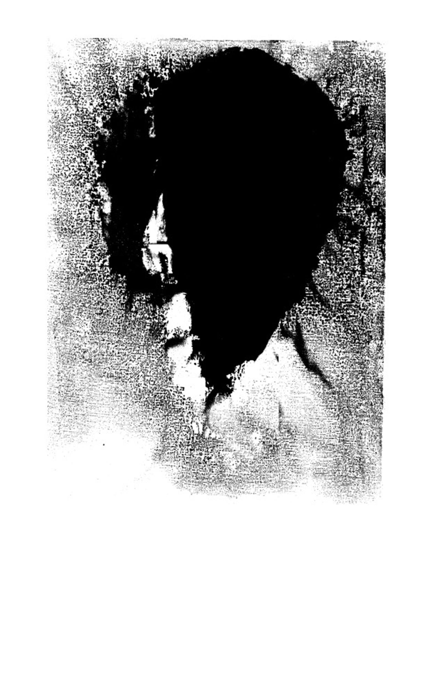
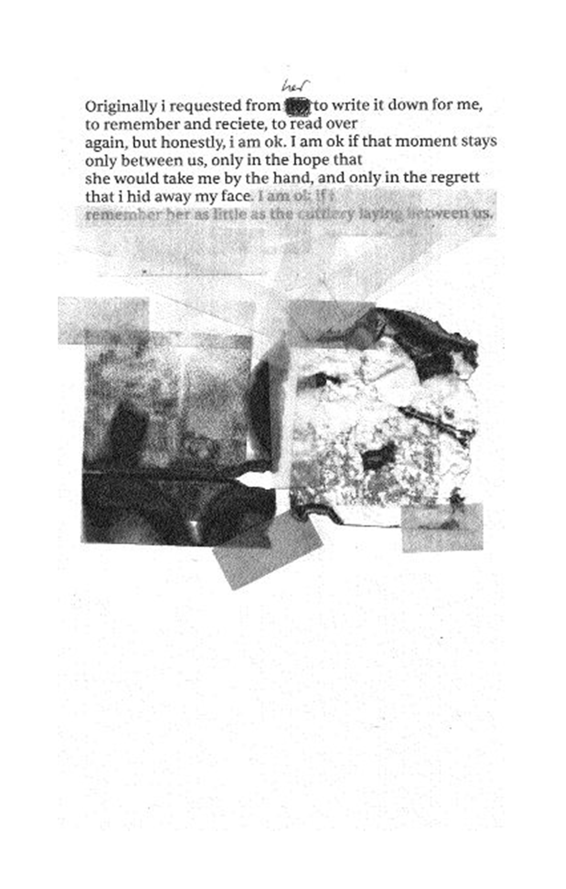
I wrote to her: Dec 3, 2024, 10:27 PM
You sent
El cuerpo queriendo descansar
You sent
La revolución llamando a la vuelta de la esquina
You sent
La nieve es vidrio picado
You sent
Las noticias, bombas
You sent
Y el privilegio, una pulga que me chupa la sangre y me
mata.
“The body wanting to rest
Revolution calling around the corner
Snow is shattered glass
The news, bombs
And privilege, a flea that sucks my blood and kills me.”
10.12.24
Cruzaré estas épocas para llegar a tu sueño deforme.
y los vientos me cruzaran para transformarse en fractales
de poesía.
seré un verso roto de la cordillera volando por las des-cos-
tas del mar del norte.
Besaré estas épocas para volver a ser roca.
o de rokha o rayo violeta cruzando el desierto de Atacama.
I will cross these epochs to reach your deformed dream.
and the winds will cross me to become fractals of poetry.
I will be a broken verse of the mountain range flying
through the un-coasts of the North Sea.
I will kiss these epochs to become rock again.
or from rokha or violet ray crossing the Atacama desert.
12.12.24
(no) hemos hecho todo lo que pudimos
ni hemos entregado nuestros poemas
se me olvidó lavar las llaves,
colgar la loza,
prender la cama,
soplar los pinceles.
Se me olvidó
la temporada
la barricada
las razones y
los besos
y todavía no nos pagan.
we have (not) done all we could
neither have we submitted our poems
I forgot to wash the keys,
hang up the dishes,
turn on the bed,
blow the pencils.
I have forgotten
the season
the barricade
the reasons and
the kisses
and we still haven’t been paid.
17.10.24
inheriting the struggle
17.10.24
don’t waste breath
to curse the damned
1.11.24
nothing, after this.
you will attempt
to produce
meaning
but there is nothing,
after this.
11.11.24
i keep writing lines
arrested
that lead nowhere
for example
“to be a body carrying another body”
i dream of lines
that speak into whole worlds
somewhere for
to go
and awake disenchanted
standing in; lines that lead
nowhere
25.11.24
and as you sit here and congratulate
on good taste intellect & culture,
ask: have you made yourselves once again into mon-
sters?
25.11.24
they are close
so close
an hour ago
they say in 36 hours that
they are close
so close to
last week and the week before a month ago and during
the holy month which was last year
close
8.12.24
Today is a day for the living.
fast $ituation
hurry--- on time
a n appointment—
a situation ---I offer my interest
there could also be time
to take
a small piece of fast, good stuff for myself, right?
-short notice /to a part of my brain/ that has an easily out-
witted spirit- even if, it doesn’t matter that much;
I’m already a little late anyway.
there are various interests, people circling around,
hovering slightly,
between and the around
an option an b e t t e r option
have you decided to drive in,
or just at the moment lower the car window? --No,
I made a decision while trying not to make one.
there is no word coming back to me. -- ! -- We.
00000000000000000000000!0!!!!!!!00000000000!!!!
it is a word --I can use when I’m sure.
when I’m sure, I’m not thinking, i think.
I‘m not thinking when I‘m writing
post correction
drive in for the appointment, ordering.
drive out.
drive in, ordering the appointment. drive OUT.
d r i v e in, o r d e r i n g—--drive OUT.
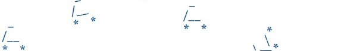
I’m not driving over.
so I have nothing to take away.
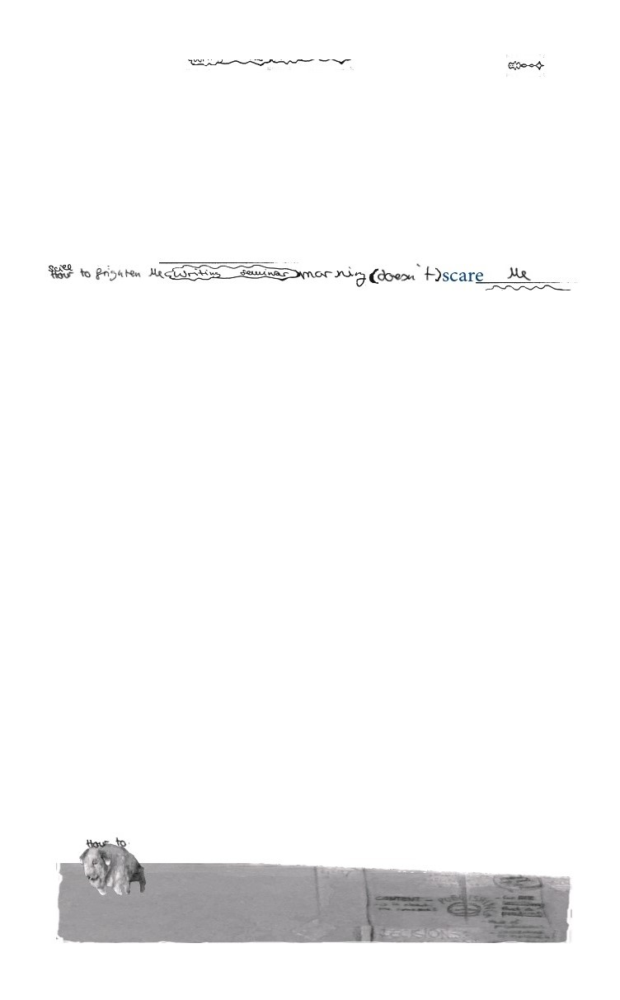
For what it is worth mentioning,
for whom it is important hearing,
When I tried to take a stone with me from a morning
walk,
I could not move it,
I could not touch it.
When I tried to talk to the stone from the morning walk,
it could be heard,
it could hear.
When I tried to take a stone with me from an evening
walk,
I could move it,
I could touch it.
When I tried to talk to the stone from the evening walk,
it could not be heard,
it could not hear.
Where are the stone now, you ask?
Everywhere...
Stones reply and leave.
While being part of something counts,
one needs a reason to bounce.
What used to be the source of hope,
now just looks like used rope.
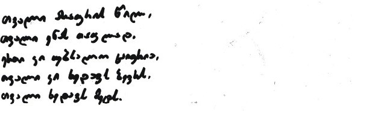
What happens when my story gets interrupted,
and yours keeps going,
on and on,
like the sound waves from where I belong.
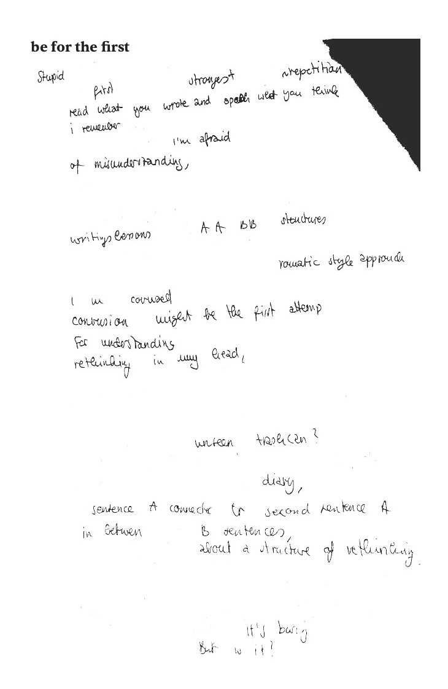
I left my room dressed up as a snail.
Feel the rhythm of the valley,
discover the speed of the river,
slow down my participation.
I step down on the conctere,
step twice on the block of material
First with my left foot and then with my right toes.
In the same step, in the same quick thought.
I drink water on an empty stomach
To feel my organ, its a kind of a border.
With the help of my elixir
I’d call my dog a stomach,
to take better care of us both.
If you got a baby, puppy,
what name would you give her?
The name of funny nonchalance.
A quest for self-awareness, a hero’s name,
Grandmother’s savoir faire.
Fossilization of the vital.
Of Real life sensations. (with a big R)
Reminiscences of love’s pleasures
through a name from the past
And mystery of adverbs.
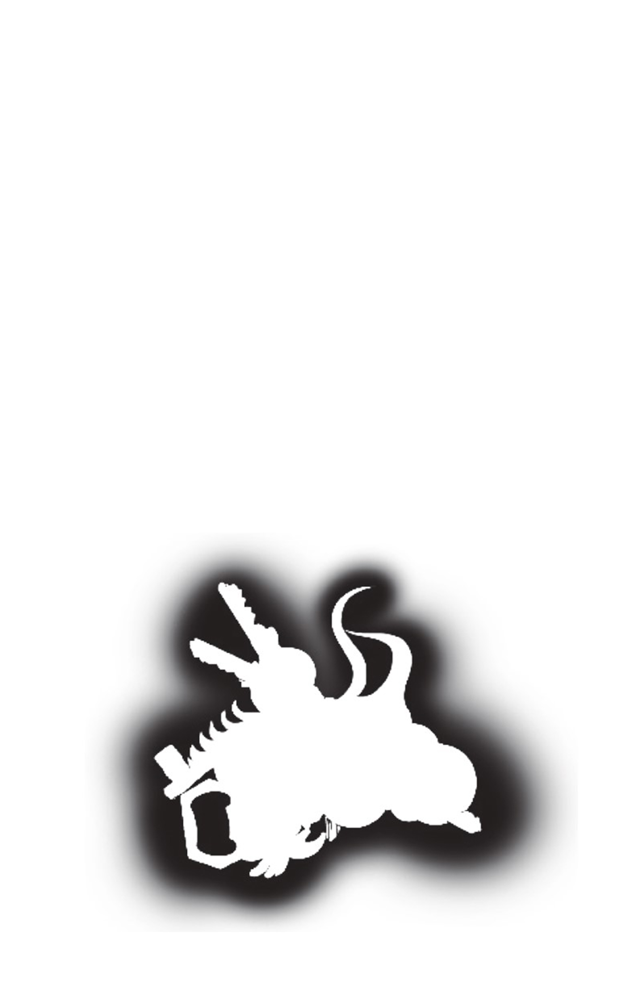
Ever know what happened?
Ever looked back?
Ever wondered what if ...?
All our dead are dear.
We distract ourselves,
and, then,
troubled we die.
Sooner or later the black yeast takes over your Carrara
marble
and your idealized bodies will disappear.
And I know for a fact
that
you try to preserve it,
hoping it will be like the swan song?
Nothing ever has been beautiful about you
so, why would the last song be?
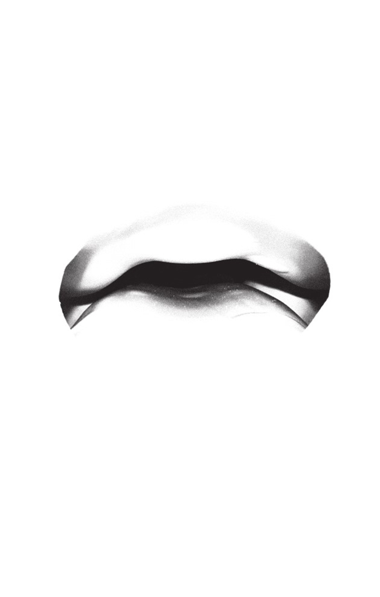
It was throwing on the plate with a
Slow rush
They were away for a bit, when they
Were back
They still didn’t say anything about
This first singular moment only
This bird was singing
I was singing
Is your mouth opened
when you’re showing your tongue?
Please be soft
Don’t walk, don’t stand up, talk when it’s fit
Not today my baby
Don’t say that
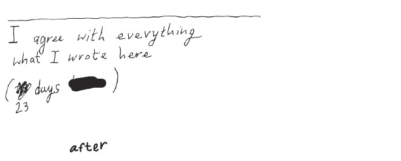
GARTEN
Para escribir los sonidos de mis recuerdos,
Necesitaría silencio.
Más bien un escenario vacío.
Ahí guardo la memoria de mis deseos.
Los olores que emanan de los recuerdos,
son por el tacto de la luz del sol.
Los protagonistas.
To write the sounds of my memories,
I would need silence.
Or rather an empty stage.
There I keep the memory of my desires.
The smells that emanate from memories,
Are from the touch of sunlight.
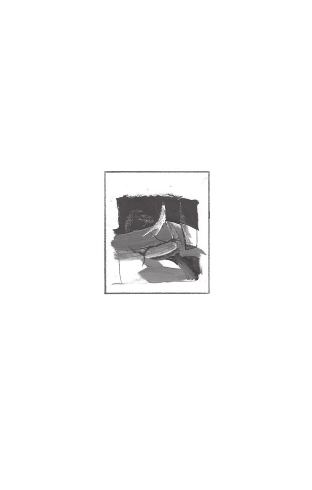
Irgendwann para responder
escribir para no morir
escribir para llevar la contra
escribir para estar más cerca del sol
escribir para llorar
escribir para jugar
escribir para tomar café
escribir para recordar
escribir para no olvidar
escribir para caminar
escribir para volver a saborear
escribir para reinventar
escribir para retroceder y observar
escribir para escuchar
escribir para alimentar
escribir para cuestionar
escribir para purgar
escribir para soñar
escribir para sonajear
escribir para responder y preguntar de nuevo
escribir para reir
escribir para bailar
escribir para melodiar
escribir para aprender
escribir para errar
escribir para humanizar
escribir para empatizar
escribir para cantar
escribir para extrañar
escribir para viajar
escribir para entender
escribir para recuperar
escribir para migrar
escribir para imprimir
escribir para declarar
escribir para saltar
escribir para honrar
escribir para amar.
the mud gave us form
from the bottom of the waters came our matter
But we won’t forget:
we are only borrowers.
One day we must return to her
for she wants back what is hers.
we did not come from the rib of a man
but the hands of a woman
I remember when I was a little girl, my grandmother used
to take me to Seu Antônio.
The children would sit in the little chairs lined up, waiting
for their turn.
To this day I remember the smell of that little house.
Seu Antônio would call us when it was time.
I would sit in the chair opposite the old man’s
And with his warm hands, already wrinkled from age
he would bless
take away evil
open paths
and protect.
Long live Seu Antônio
and the elders who devote their lives protecting and
blessing.
Long live the guardians, healers and benzedeiros who
protect the children.
May they all be guarded and safe.
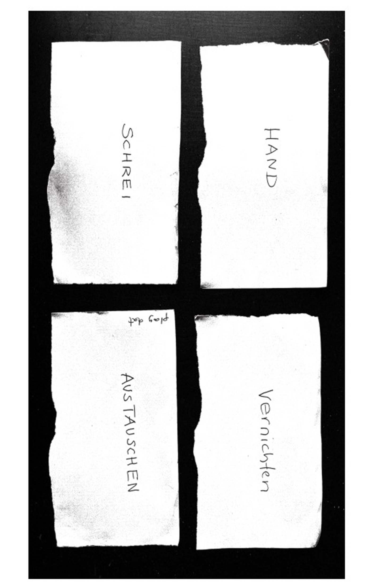
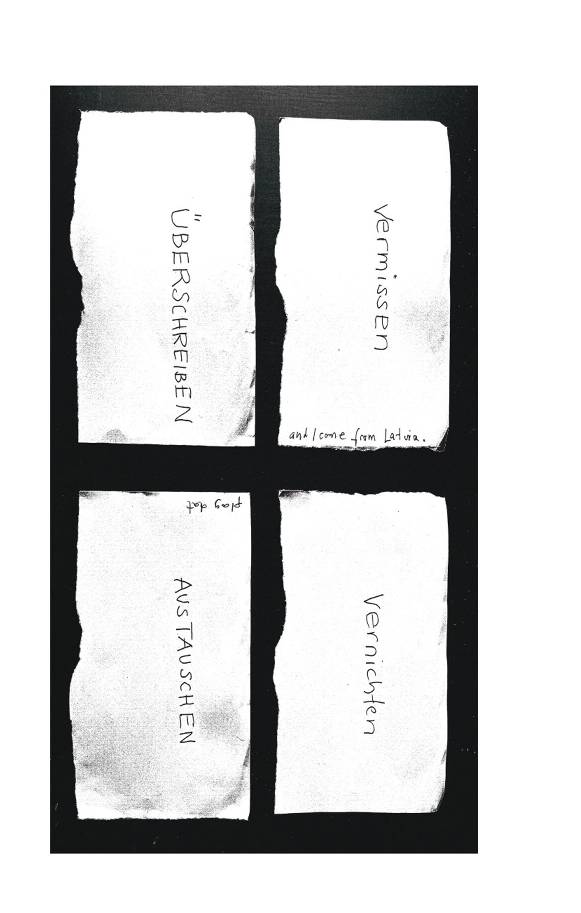
Our culture is a crossroads culture.
It’s alive
It is movement
Uncertainty
Indecency
Malandragem
Dribbling
Cheating
Intelligence
Astúcia
The joy that goes out on the street and ends in sweat.
Sweat it all out,
A purging ritual
and for a moment feel on the skin what freedom is.
Freedom, which we only learn by reading in the dictionary.
But the street,
the sacred street in its great profanity
is the temple of freedom.
Where the transition between worlds
becomes reality.
The crossroads,
a encruzilhada.
Ohne zu vergessen
Ohne zu vergessen wenn sie gehen
Nach Hause zurück
Zurück in die Zukunft
Familien Vereint
ohne führer
Selber gewählter Weg
Dahin wo es wächst
Doch
Ohne zu vergessen wenn sie gehen
Die taten
Die Hilfe
Die Geschichten
Ihre Gesichter
Meiner Freunde
Ohne zu vergessen wenn sie zurückkehren nachhause um
die Flucht zur Reise zu machen
Das leben zu leben
Um wieder zu leben
Nicht zu fliehen
Uns hier bleibt uns
Was wir gelernt und vergessen werden
Woraus wir lernen hätten können
Wodurch du und ich etwas verstanden haben
Das das hier
Das wir
Privilegiert
sind
Und noch viel zu lernen haben
Was wir hätten alles lernen können
Ohne zu vergessen wenn sie gehen
To write poetry in a hurry
and make trees go all blurry
somewhere inbetween
I will have something to bury.
And if the night decides to be long
I might even compose her a song
who knows, maybe even two
and have life between ping and pong.
Just like destruction of nature
one death leads me to paper
and in a tender confession I write:
names and numbers of minors and majors.
So if evil is lazy
you call me crazy
soil will remember
the scent of a daisy.
Nov. 30
Ich wollte ein Gedicht schreiben.
Ich wollte ein Gedicht schreiben,
aber meine Worte stecken.
Heute gibt es keine Zeit.
Keine Zeit zu dekorieren,
Keine Zeit für klingende Worte, für verblümten Quatsch.
Heute gibt es keine Zeit für Kaffee und Kuchen.
Keine Zeit, geduldig zu sein,
Deine ÄÄHs zu schlucken,
Keine Zeit, die großen Kartoffelstücke zu kauen.
Keine Zeit zu hören,
Keine Zeit zu schweigen.
Mir tut was weh.
Eure Vergessen tut weh.
Wenn ihr mir die Worte versteckt,
was ich sehe,
was ich fühle,
was ich denke.
Mir tut eure Vergessen weh.
Mir tut im Knie eure Euros weh,
Im Nacken eure Algorithmen,
Im Kopf eure „Zukunft“.
Also
Mir tut weh,
wenn ihr schweigt,
wenn ihr klagt,
wenn ihr auch gar nichts sagt.
Aber eure Vergessen, das tut mir nicht nur weh.
Mir tut auch leid.
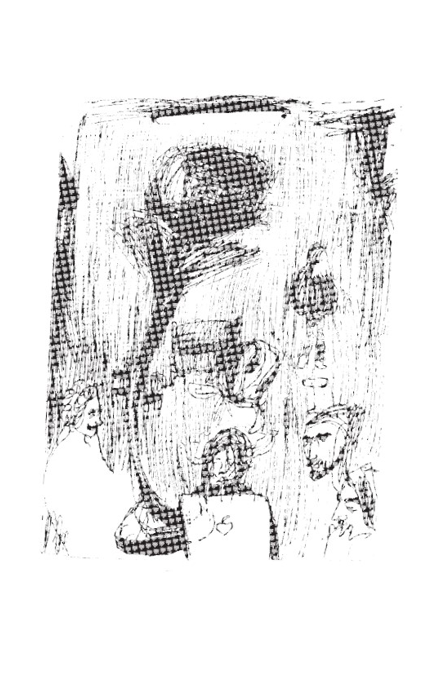
Weiße Schweine
Will unser bleicher Meister
die Sonne der Welt aussähen,
zerknüllen, und sich einsetzen,
gelb verdickte Krallen, um sie
ergreifen zu dürfen?
Braucht unser bleicher Meister
so viel Untertan-Material,
die ihm bedienstet
Hühnerherzen
und Affenhirne
servieren,
seine Augen mit
Schmeichel umsorgen,
seine endlose Zunge
füttern mit Überfluss und
Dekadenz?
Wird unser bleicher Meister
schwer atmen, bis
seine Speiseröhre verstopft
sein Mund schaumüberquellend
sein Magen zur Detonation
und sein Fleisch in sich eingesunken
ist?
Natürlich!
nicht wie sondern wieviel.
Die Reichen
Sitzen außen
in ihrer Habe mumifiziert
in den Säften der Jugend -
ausgesaugt -
badend.
Leben unendlich
aus ihrem Erbe
verleugnen die Natur, die stiehlt
jeder ist arm,
jeder Knochen ist ausgeliehn.
Jede Ressource ist begrenzt
jedes Bedürfnis ist ewig
eher verschlingt man
die Welt mit sich,
als dass dein Nachbar
mehr besitzt.
Material
Vernunft verdirbt,
sind ein jämmerlich Atom-Gestrick
Begrenztes Ich
halten Meere aus Galle zurück.
Die Welt zerfleischt
in Ölpest getauft
Gamma-Strahlen um dein Augensaum,
Speichelbiss, Geißelstich quillt heraus ein warmer
Schaum.
Eingesessene Schöße
Aschetod, versunkene Felder ohne Duft
blüht nicht, wie es euch beliebt
unsre Lungen verschlungen den Rest der Luft
Heidenlandschaf
Ich sehe:
wie feuchte, rosa-weiße Blüten,
ausatmen und sich strecken
und zu einem fließenden Liegebett werden,
auf dem Bäume und Sträucher wie
türmende Inseln schwimmen
und Hügel sich umarmen und
Licht scheint durch die pfählernen Bäume
wie ein Pfeil.
Sonne birgt einen fruchtbaren Schaum
Feigenbäume spucken ihre Nachkommen
Kindern süß in den Mund, saufen
trocken gespinstigen Saft
geflechtet aus dem Licht alter Sterne
und dem Wirbel zwischen Werden und Fallen.
Man wartet auf jemanden, der
einen einspeist
im irdischen Bauch, wie
Maulwürfe die zwischen Stein und Knochen hausen,
bis an die Wurzel des Seins geleitet
verschlungen.
Unterbewusst
Unter meiner Haut
ein Teich der plätschert
mein Seelenrand bläht sich auf
erquillt bis ans Meeresbett
an die Strände junger Tage
wo Kinder spielen
wo Mütter zu ihren Töchtern werden.
Ein einziger Fisch schwamm darin,
war Rot gegen das grüne Wasser,
auf und ab als kämpfe er gegen
den Teich sein Körper.
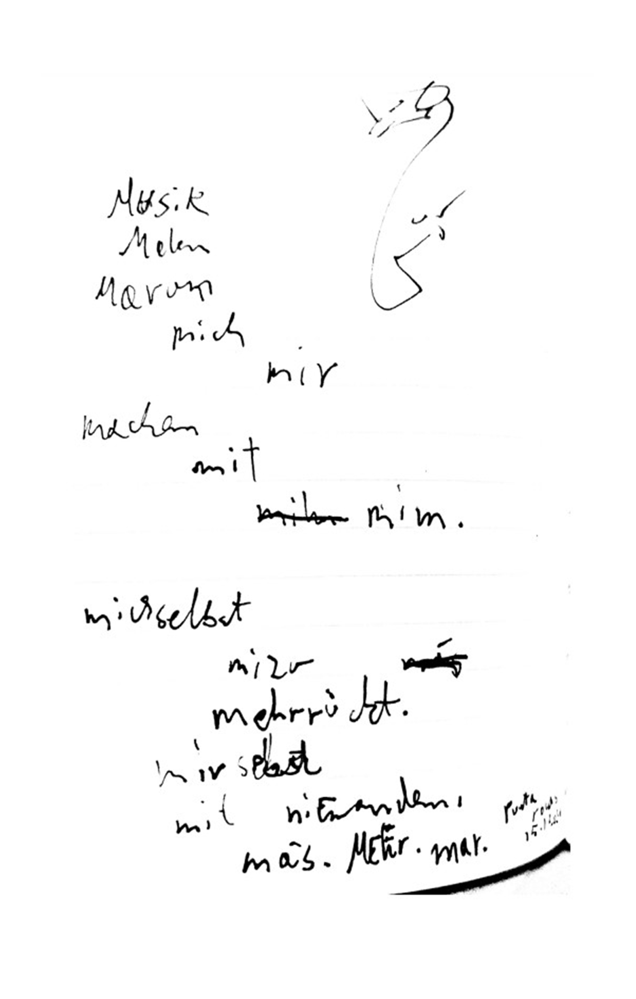
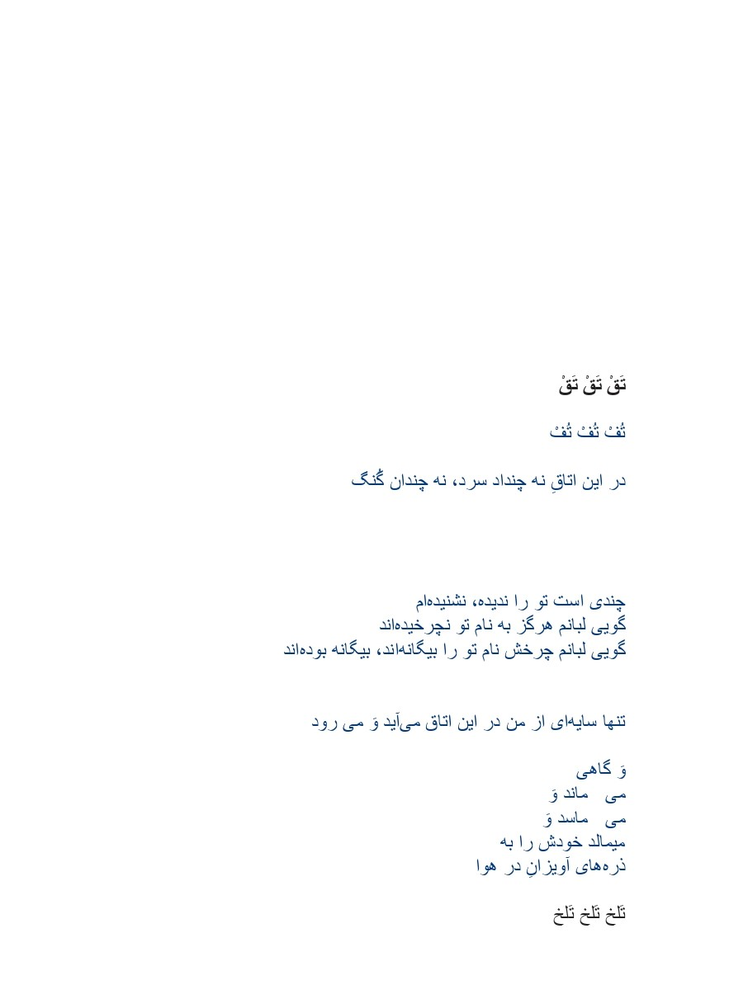
tagh, tagh, tagh
a person enters the room(looking around), not saying a
word
a week later, moments in between
asked the room who those two were.
how come they left?
did you try to convince them to stay a bit longer?
the room stayed still and left the room
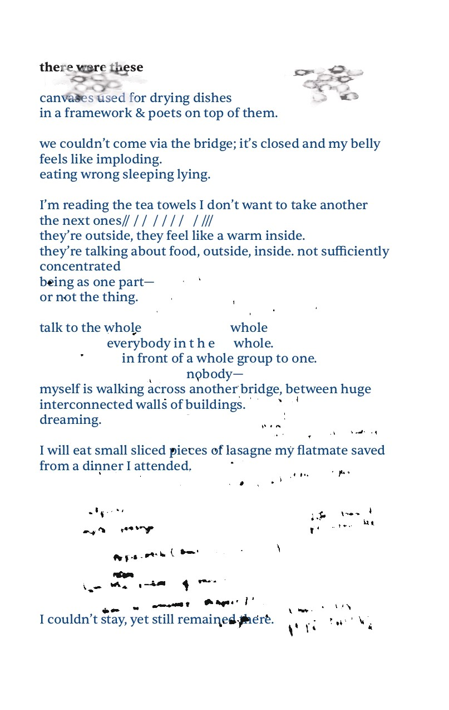
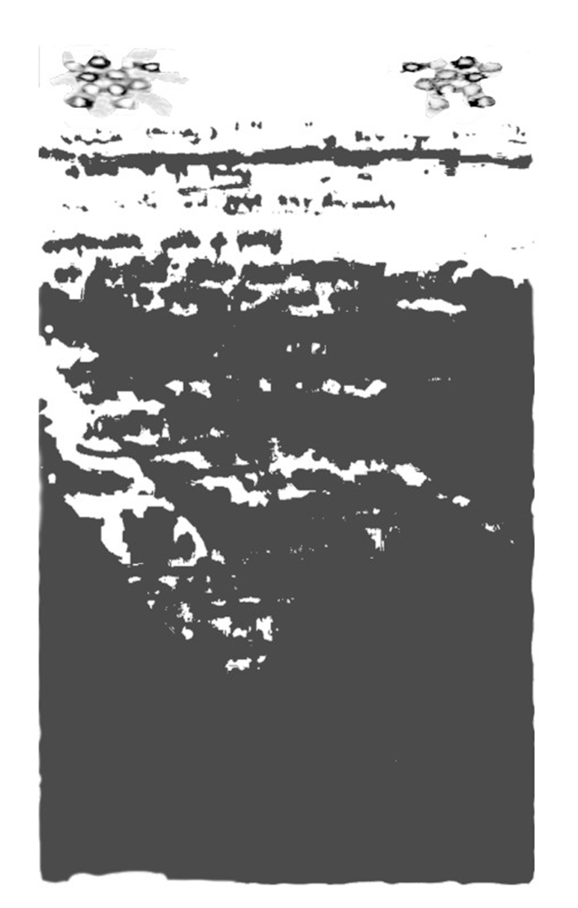
he walked until his feet bled as I was whispering
in his left ear of his moldy fears
I did recognize my voice no more since I speak
in a foreign language
tell me all your minor words
dull, little, worthless words
in a language, we both know
tell all big words
in a language, no one knows
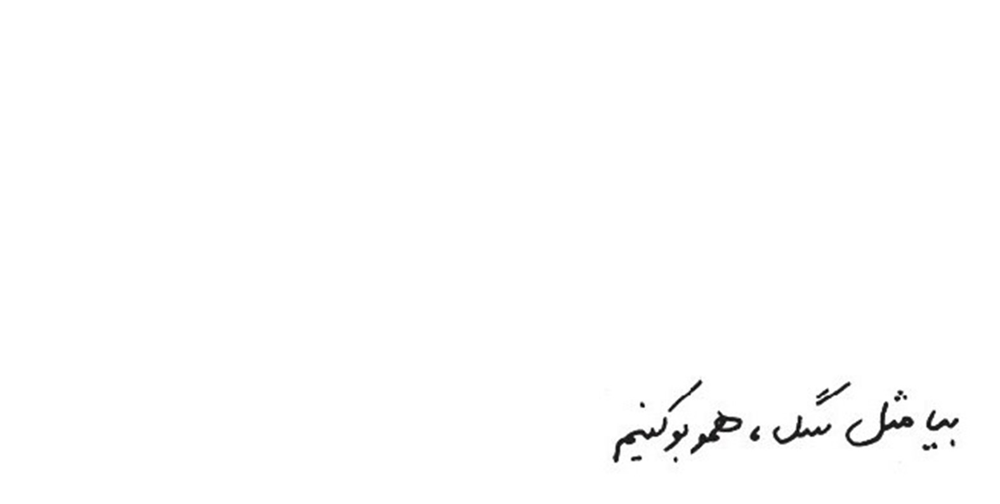
Whispers in plantations
No No No No
Like or unlike
Staying true
Staying solitary
What is the color of May sunset?
No anger; No disappointment; No One
But what else?
Paper. A Wall. Floor. An advertisement banner. In-be-
tween.
Left alone. Many left alone. Words left alone. Words left
me alone. I left the words alone.
The words do not go there. Little they knew i speak land-
scapes
mountains
rivers
but also, tap water(s)
Trouble and care
Work and love
Run and gain
Book and hate
Fate and food
Flood and mystery
Mr. Me and rain
Pain and bread
Dead and here
There and End.
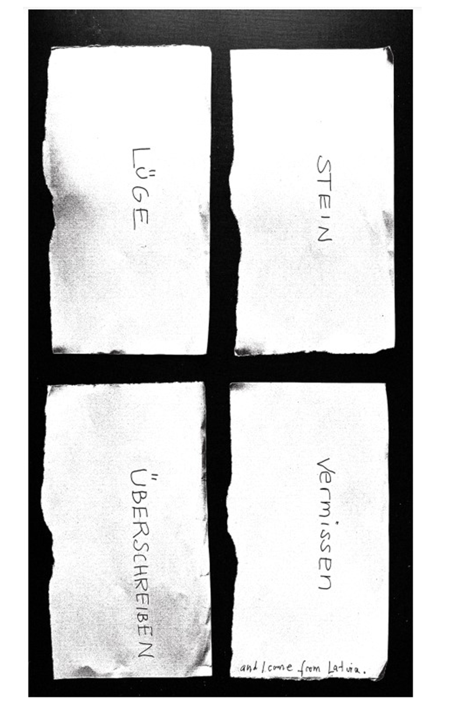
Plenum
(forms / that / can / host / complexity)
Complexión: “relación de los sistemas orgánicos de
cada individuo”
(for / forms /disform / discomfort)
Lacuna,
vacía,
un lienzo,
tu cama,
tu esquina,
tu cuna,
la mía?
How can I live like this?
Mañana:
8:30 Yoga
9 ducha
9:30 collage para objekt werden objekt sein
10 desayuno con Elena
11 Lago
14Circa
19terapia
21 spülmaschine abholen
A little poem for our group
Like Water
We come from everywhere.
In liquid form,
We take the shape of this shared space.
As vapor,
We rise and gather, clinging to dust,
Becoming raindrops of connection.
And when the time comes,
We scatter,
Flying to distant horizons,
Each carrying a part of this moment within.
Para comenzar
Start with your fingers,
move them and send signals to your whole body.
You will see your bed move
You’ll see your day begin.
Open your eyes slowly
enjoy the light passing by
Try to wake up with your ears
listen to the silent glow of this winter.
Do you still recognise your room?
Do you still recognise your body?
To cry or having an orgasm is the best warm up to start
your day, your dance or your life.
Start with your fingers,
Generosidad nov.2024
Blando
color piel
que bueno poder nombrArte
o aunque sea, imaginArte.
“Soft
skin-color
how good it is to name you
or at least imagine you.”
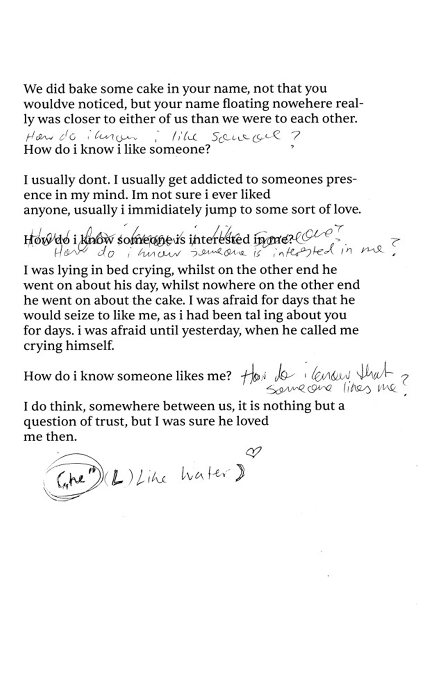
I am not mad because you make me look like a tourist,
or because our conversations are so easy,
or because you never play with language,
or because we barely drink water together,
or because you reach for cigarettes so silently.
No, I am not mad because of all these reasons.
I am mad because you have a calendar hanging in your
office.
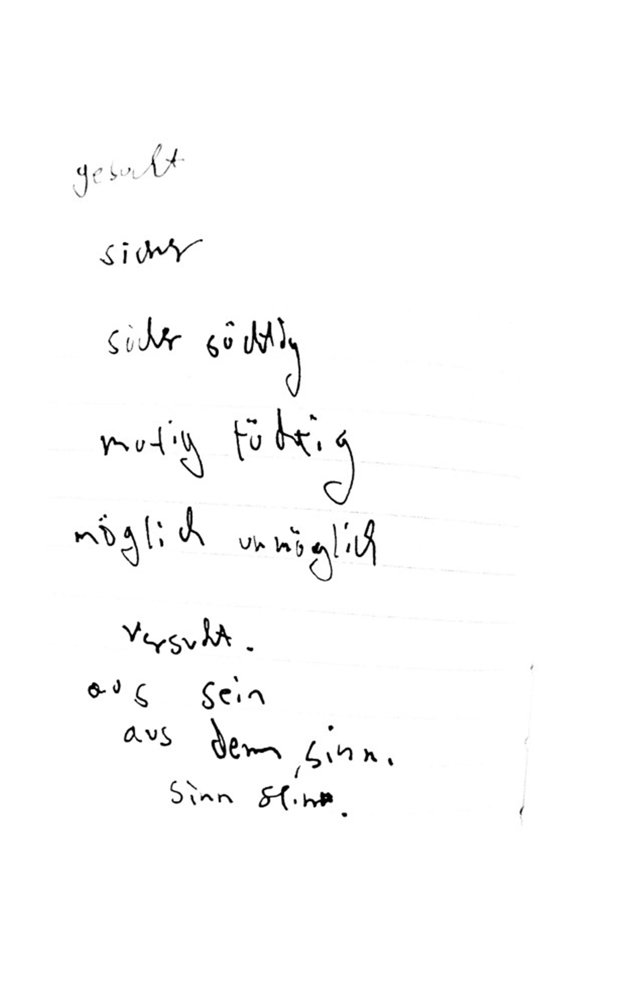
SACHEN MACHEN MACHEN SACHEN
Ihr habt meine Hände,
aber nicht meine Finger.
Ihr wisst nicht, was ich mache,
was ich machen kann.
was ich Sachen machen,
was ich machen Sachen.
Ich spiele
Ich singe
Von der Weser zur Nordsee.
Ich will sagen.
Ich will spielen.
Ich will Sachen machen,
Ich will machen Sachen.
Ich mache Sachen.
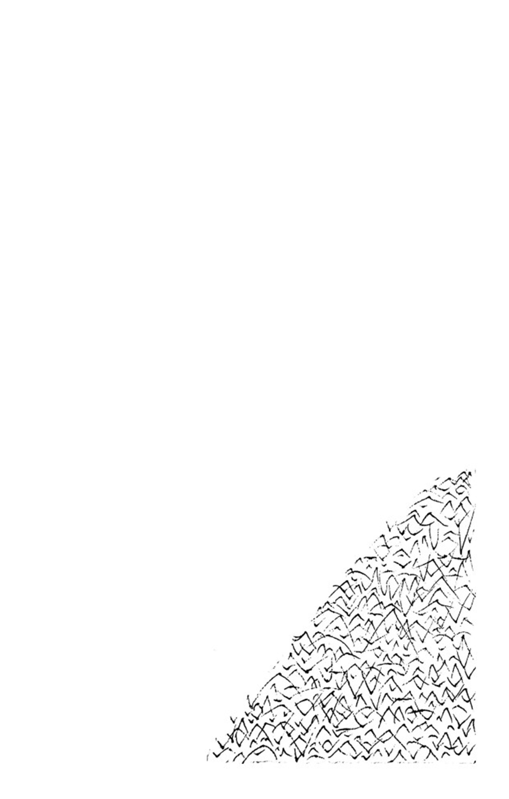
collective residuehere to stay
we have knotted ourselves
into your fences
our feathers ruffled
our clothes torn
here to stay
disbanding your ignorance
and dancing on and in
and within its ruins
its faultlessness
its impeccable morals
we have knotted ourselves
into and out of
holding on to life
holding still
with and without
commerce raider
attacking my wellbeing
looting all sense
to turn it into vegan merchandice
all kids brainwashed
uni’qlod in ever new shades
damn lucky
catching the big fish
no effort
surfing on all that was
stolen before
die hohe treppe
die hohe treppe
der aufzug für 6 personen
die türflügel wie ein kapitel
unten junges geflügel mit knöpfen
lungernd in den kellergärten
der reichen
alle twists sind schon formuliert
und schnell mit frischer performance
und schlichter anwesenheit
gefüllt
kaffee mit zahlencombis
während ramadan auch gern abends
gegenüber
die cousins
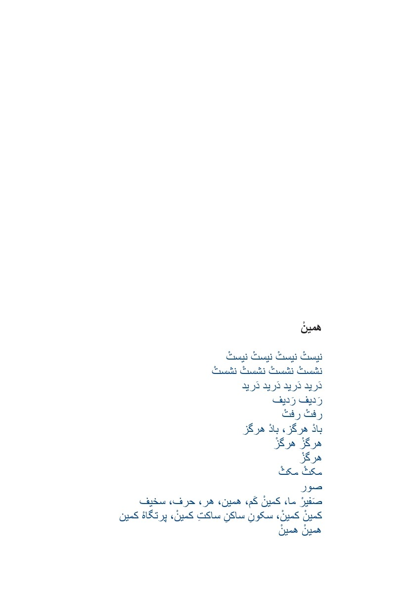
goarwywaswyt
Published and edited by
Any Jackson Chaturanga
Text and images by
Ziyi Li, Jany Maus, Eghbal Joudi, Carlotta Wirtl, Noelle BuAbbud, Ruomeng Huang, Nastia Belousova, Nico Dasenbrock, Bubu Mosiashvili, Moosy Al Zubaidi, Marina Marcomini, Moira Meine Fuentes, Jashua Bustos Chumasero, Natascha Sad Haghighian.
Printing
Druckpool,Silkscreen workshop of HfK Bremen
Paper
Fabriano 1264 Sketch 90gsm
Clairefontaine Drawing Grained Paper 125gsm
Font
Sentient by Type Foundry Fonts
First Edition
100 copies
January 2025, Bremen
Special thanks to Greta Lüdemann, Zane Zlemesa.
This publication has been made possible thanks to support
provided by the Publication Fund of the University of the
Arts Bremen, Germany.